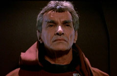
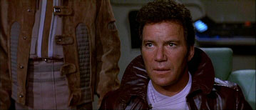
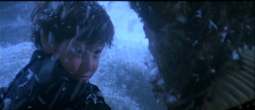
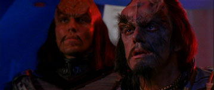
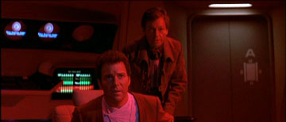
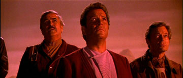
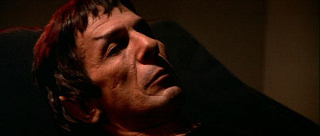
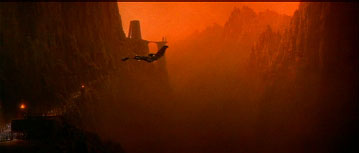
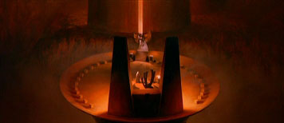
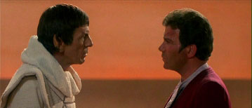

|

STAR TREK III:
THE SEARCH FOR SPOCK
1984


Sinopse
comentada
Comentrios
Citaes
Efeitos
Especiais
Trilha Sonora
Trivia
Ficha
Tcnica
O
DVD
A Morte Tornada
Chance
de Vida

Data estelar: 8210.3.
Vemos novamente os ltimos momentos de Spock com vida na Engenharia da Enterprise, pouco depois da detonao do dispositivo Genesis no interior da nebulosa Mutara. Lembramos do seu funeral, das ltimas palavras de Kirk dedicadas ao amigo ("De todas as almas...") e de como caprichosamente o seu caixo fotnico se depositou intacto na superfcie do recm-criado planeta Genesis. Um imortal prlogo, repetido por Spock, marca o incio de uma nova aventura.
A maior parte dos danos da Enterprise na batalha com a Reliant (comandada por Khan) j foi reparada e a maioria dos cadetes outrora a bordo (e provavelmente os tripulantes sobreviventes da Reliant tambm) foi transferida para outras naves. Presentes na ponte esto Kirk, Sulu, Chekov e Uhura. Na Engenharia est Scott. A Enterprise est a
2,1 horas da doca espacial em rbita da Terra. Kirk sente muita falta de Spock. O Comando da Frota no responde
s suas mensagens pedindo informaes a respeito do planeta Genesis. Kirk sabe somente que o seu filho David e a tenente Saavik foram enviados para pesquisar o astro recm-formado.
Longe dali, uma pequena nave de carga espera para entregar informao a um cliente. Uma aliengena, de nome Valkris, sinaliza ao seu senhor (e amante), um comandante Klingon de nome Kruge. A Ave de Rapina de Kruge se descamufla, ele recebe os dados (sobre o projeto Genesis) e acaba por destruir a pequena nave de carga, por perceber que Valkris leu os registros enviados a ele.
De volta Enterprise, agora prxima da Terra, Chekov (no posto de cincias) detecta uma leitura de vida na cabine (selada pelo prprio
russo) de Spock e a segurana diz que a entrada foi forada. Kirk encontra McCoy no interior da cabine de Spock e ouve o amigo falar com a voz do falecido Vulcano (e de uma forma semelhante deste). McCoy pergunta (para completa surpresa do almirante) por que Kirk o deixou para trs no planeta Genesis e acrescenta que "ainda h tempo" se ele "o levar para casa". "Casa" sendo o monte Seleya em Vulcano. Kirk teme pela sanidade do amigo e o doutor desmaia nos braos do almirante, pouco depois de dizer um enigmtico: "Lembre-se...".
O filme comea com quase cinco minutos e meio entre recapitulao e crditos (obviamente) para cortar os custos da produo. O claudicante roteiro j mostra o seu "valor", trazendo um Kirk absolutamente mal resolvido com relao perda de Spock no filme passado, o que de forma alguma representa o real estado emocional do almirante ao final daquela aventura (e de fato este no era o objetivo ltimo do roteiro de Meyer -- muito pelo contrrio). O conceito do "Katra" como um elemento ativo na mente de McCoy foi algo lamentvel durante todo o filme (por elevar os poderes telepticos de Spock a um patamar absolutamente irreal para o que ele sempre apresentou durante a srie) e a utilizao da voz de Spock no lugar da do mdico se mostrou uma infeliz e proverbial "cereja no bolo as avessas" (TM). Tentando acrescentar um elemento de "choque" que se mostrou muito pouco efetivo (pelo menos a voz sempre saiu de fora da cena, o que minimiza um pouco a utilizao de to infame clich).
O "Katra de Spock" tambm parece um pouco confuso, perguntando (atravs
de McCoy) por que Kirk o deixou para trs. Isto no faz muito sentido, uma vez que o que ficou para trs foi simplesmente um cadver, extremamente castigado pela radiao e, como fica claro em seguida a bordo da Grisson, ningum sabia nem ao menos que o caixo de Spock havia sobrevivido, quanto mais que havia um "Spock" regenerado deixado para trs. McCoy em seguida fala do monte Seleya, algo que se alinha melhor com a maior parte do que dito por Sarek depois, mas a insegurana do roteiro j se mostra clara na cena.
curioso que a Frota Estelar estabelea quarentena em um planeta e no determine um permetro de segurana com suas naves (e no mande nenhuma outra nave atrs da Enterprise aps o fiasco da Excelsior
-- considerando que esta era uma nave experimental, onde estar a tal "Frota Estelar" nestas horas?). claro um esforo de mostrar Kruge como algum impiedoso, mas o tiro sai pela culatra embaraosamente. As motivaes do Klingon so absolutamente unidimensionais, tanto ou mais quanto s de Khan no filme passado, e, alm disto, mais que unidimensionais,
as motivaes de Kruge so mal definidas, sustentadas por uma vaga busca pelos "segredos de Genesis". Sem contar que Lloyd no tem uma frao da presena e do carisma de Montalban e do seu personagem no se integrar tematicamente ao roteiro de forma alguma, parecendo ser enfiado na base do frceps mesmo. E sobre o seu
"proto-targ de estimao" (TM), quanto menos falarmos melhor. Perguntas: O que
Chekov falou em russo para Scott? Que fim levou a chefe do projeto Genesis, a doutora Carol Marcus? Como Valkris conseguiu acesso ao sumrio do projeto Genesis (mais uma economia do filme ao exibir tal sumrio, alis)? Por que tal sumrio apresentado por Kirk e no pela doutora Marcus? De onde saiu aquela frase de Scott sobre automao na Engenharia da Enterprise logo no comeo do filme?
A Enterprise chega doca espacial (que tem o formato de um gigantesco cogumelo) e vislumbra no seu
interior uma grande nave que ser o modelo do futuro da Frota Estelar, a Excelsior (NX-2000), equipada com motores transdobra e quase pronta para testes. Janice Rand uma das presentes
chegada da Enterprise. O almirante Morrow inspeciona a nave de Kirk e avisa, para surpresa da tripulao, que a Enterprise no vai ser reparada e sim,
decomissionada. Scott requisitado na Engenharia da Excelsior, os demais ficam sem uma posio imediata. Todos so instrudos a no comentar nada sobre Genesis, que se tornou uma controvrsia galctica. Literalmente um planeta proibido
Kruge acaba lendo o sumrio do projeto Genesis (feito por Kirk) e, percebendo que pode usar tal dispositivo como uma arma quase que definitiva, ruma para o planeta homnimo para tentar conseguir mais informaes. A nave de pesquisa USS Grisson chega ao planeta Genesis, sob o comando do capito J. T. Esteban. Na ponte, David e Saavik comeam as
leituras e percebem um planeta com grandes mudanas climticas localizadas. Descobrem o caixo fotnico de Spock intacto e uma forma de vida que no conseguem
identificar -- no deveria haver vida animal em Genesis. A Vulcana e o filho de Kirk tentam convencer o capito Esteban a
deix-los descer para investigar.
O tema "de que o tempo est passando e uma era est terminando" vlido, pena que to pouco seja feito com ele no filme. Obviamente David e Saavik descem sem uma escolta armada (lamenta-se, mas certos clichs so eternos -- especialmente nestas circunstncias muito pouco inteligente deixar David em uma posio vulnervel em que ele possa ser seqestrado). Perguntas: Exatamente por que Kruge foi ao planeta Genesis? Ser que foi para fazer algum tipo de "Engenharia Reversa"!? Como os sensores da Grisson conseguem examinar minuciosamente os climas locais e no conseguem identificar os sinais vitais dos micrbios e depois os de "Spock"? O tricorder de Saavik tambm falha em identificar os sinais vitais de "Spock" mais tarde na superfcie.
Revendo as gravaes dos ltimos momentos de vida de Spock na Engenharia da Enterprise, Kirk identifica um breve elo mental entre Spock e um desacordado McCoy. O Vulcano disse um quase inaudvel: "Lembre-se..." Enquanto praticava tal elo. Sarek confirma e diz que Kirk deve levar os dois at o monte Seleya em Vulcano para que ambos possam se libertar da dor que os acomete. Kirk diz que tal tarefa no ser fcil, mas que far tudo ao seu alcance para
realiz-la.
A histria que Sarek conta faz sentido, o que no faz sentido por que seria difcil para Kirk levar McCoy a Vulcano para depositar o Katra do Vulcano no monte Seleya. Era s colocar o doutor em uma nave de carreira e ponto final. De novo,
isso faz sentido. O que no faz o menor sentido esta ida ao planeta Genesis para resgatar o corpo de Spock (que Sarek acaba aparentemente sugerindo ao final de sua conversa com Kirk). Eles no sabem onde o corpo est (ele foi lanado ao espao em um torpedo, pelo amor de Deus!) e muito menos que este foi regenerado (possibilidade de regenerao deixada escancaradamente visvel ao final do filme anterior, alis). Para que ir a Genesis? E, pior de tudo, justo na Enterprise e com uma tripulao de cinco pessoas. Curiosamente, Kirk j havia falado sobre uma ida com a Enterprise a Genesis, quando da primeira formatura para o almirante Morrow, quando da chegada da nave a Terra. Por que isto? De toda maneira, a partir deste ponto no filme, fica muito difcil levar a srio qualquer coisa vista em tela at o final.
David e Saavik descem superfcie do planeta Genesis, o sinal de vida aparenta em primeiro lugar ser simplesmente o dos micrbios do caixo de Spock que foram modificados pelo efeito Genesis em uma espcie de amebas tamanho famlia. Os dois detectam uma outra forma de vida e ouvem gritos ao longe enquanto o clima local do planeta enlouquece completamente (o caixo de Spock est vazio, restou somente a sua mortalha no interior do torpedo). Kirk pede autorizao a Morrow para levar a Enterprise a Genesis. O comandante da Frota Estelar nega o pedido e diz que Kirk no pode ir, mesmo fretando uma nave. Kirk avisa a Chekov e a Sulu que vai assim mesmo, e com a Enterprise. McCoy tambm tem interesse de ir ao planeta Genesis e visita um bar onde encontra um aliengena que pode arranjar transporte clandestino para o setor Mutara, agora sob quarentena. O aliengena irrita McCoy na negociao, e o doutor comea a falar alto sobre Genesis. Ele imediatamente levado sob custdia por um segurana da Frota Estelar (curiosamente ele tenta aplicar um "toque vulcano" em tal agente, porm sem sucesso). A nossa "dupla dinmica" observa pegadas humanides na superfcie de Genesis.
Fcil, a pior cena do filme a visita de McCoy a um bar futurstico. Lugar aparentemente refugado de alguma pardia mal feita de "Star Wars", com direito a jogos "pseudo-hologrficos" e a um aliengena falando de forma embaralhada (ou invertida, alm de outros "mimos",, claro), caracterstica daquela outra
franquia. Fica ainda pior quando chega para servir McCoy uma inacreditvel "garonete felina" (TM), to mal caracterizada (falando do vesturio e adereos somente, claro, pois a atriz e o roteiro so casos absolutamente perdidos) quanto os pingos semelhantes a bolas de algodo-doce que enfeitam o estabelecimento. Esta cena d a clara certeza de que uma aberrao completa como o
quinto filme poderia ser produzida por Bennett. Nada ocorre no vcuo ou por acaso,
e a possibilidade de tal desastre se mostra clara neste momento.
Perguntas: Por que Morrow no colocou um destacamento armado na Enterprise, "s por precauo", aps a sua conversa com Kirk? Exatamente por que "Spock" foi refeito fisicamente
imagem e semelhana de Spock e os micrbios em seu caixo sofreram as mais absurdas mutaes? Se Genesis cria vida de acordo com a sua matriz, como "Spock" foi refeito idntico ao que era antes? Por que a matria do caixo fotnico no foi arranjada tambm segundo o efeito Genesis?
Kirk vai visitar McCoy em uma cela de deteno, estando o doutor j a caminho de um sanatrio. Sulu chega um pouco depois
instalao de segurana e consegue dominar um guarda, ajudando Kirk a fugir com o "bom doutor". Scott termina o seu turno de servio a bordo da Excelsior. Kirk, Sulu e o doutor chegam a uma estao de transporte terrestre operada por Uhura e um oficial novato. A oficial de comunicaes da Enterprise domina com facilidade este novato e transporta o trio de fugitivos para a ponte da NCC-1701, prometendo se juntar a eles em breve em um certo "ponto de encontro". Na ponte da nave, eles se juntam a Scott e Chekov. O "fazedor de milagres" diz que automatizou completamente o funcionamento da Enterprise e que
ela poderia ser operada apenas da ponte, mesmo que somente por Kirk e McCoy. Os demais se oferecem como voluntrios para a misso. A nave entra em movimento e imediatamente o capito Stiles da Excelsior avisado
de que algum (Kirk) est roubando a Enterprise. Scott realiza mais um milagre e consegue abrir remotamente as comportas da doca espacial. A Enterprise entra em dobra espacial, mas quando a Excelsior tenta o mesmo o seu computador "d pau". Scott ri a bordo da Enterprise por mais um "milagre" (ele sabotou a Excelsior) realizado, enquanto a Enterprise ruma velozmente para Genesis com os cinco amigos a bordo.

A fuga de McCoy at que funciona bem, apesar de no ficar muito claro qual seria a diferena prtica em usar diretamente os transportes da Enterprise ao invs da central de transportes terrestre. Por outro lado absolutamente constrangedora a caracterizao de Stiles, com direito at a um absolutamente absurdo ginete. Como se o grupo da Enterprise fosse composto pelos nicos oficiais da Frota que pudessem compreender o sentido da profunda lealdade e amizade que nasce no seio de uma tripulao estelar. Lamentvel!
Cabe citar (no para reforar a posio j apresentada, mas para ilustrar a questo com uma impressionante coincidncia) que a mesma situao j havia ocorrido alguns anos antes na conhecida "Saga do Cometa Imprio" da clssica srie de animao
japonesa: "Yamato". L, Andromeda, Gideon, Yamato e Wildstar ocupavam exatamente os mesmos lugares da Excelsior, de Stiles, da Enterprise e de Kirk neste terceiro filme de
Jornada. No somente as motivaes para o roubo da nave titular da respectiva srie eram infinitamente mais slidas no caso da "verso da Yamato" da histria (em que a nave partia com um bando de cadetes como tripulao a bordo, alis), mas a forma como tal fuga foi resolvida, baseada apenas nas decises de pessoas que partilham um meio de vida em comum, to mais satisfatria que faz a "verso de
Jornada" da situao parecer algo escrito por um amador. particularmente digna de nota (no caso da histria da "Yamato") a cena em que, resolvido o conflito,
as tripulaes da Andromeda e da Yamato acenam uma para outra a distncia, enquanto temos narrativas de ambos os capites que pontuam tal cenrio extraindo at a ltima gota de sentimento da despedida da grande nave (aps esta bela construo, a perda da Andromeda no final da saga to emocionante ou mais).
Definitivamente, a possibilidade de automatizar completamente o funcionamento da Enterprise (como apresentada aqui) um feito to grande que beira a irresponsabilidade criativa por parte dos realizadores do presente filme. Se Scott conseguiu realizar tal tarefa em tempo recorde, trabalhando ao mesmo tempo na Excelsior, e em segredo, exatamente por que so necessrias 430 pessoas para operar uma nave de tal porte? Quando as habilidades de Scott (ou de qualquer um) viram passes de mgica, a Enterprise vira ao mesmo tempo apenas mais um modelo filmado pelos tcnicos da IL&M, nada mais, nada menos que isto.
Mais um anacronismo: fora de impulso dentro da doca espacial!
Saavik e David encontram um menino Vulcano em meio a uma tempestade, um jovem que o doutor Marcus acredita ser Spock, de alguma forma regenerado pelo efeito Genesis. Entretanto, o capito Esteban est em dvida se transporta o trio a bordo da Grisson ou no devido ao risco de contaminao, que David acredita no existir. Neste momento a
ave de rapina de Kruge chega a Genesis e destri a Grisson. Os Klingons detectam o trio na superfcie do planeta, Kruge decide investigar, no sem antes matar o seu armeiro, que falhou em cumprir a sua ordem de simplesmente atingir o motor da nave da Frota Estelar. O trio na superfcie consegue se esconder em um sistema de cavernas por algum tempo. Este "Spock" envelhece rapidamente, de uma forma aparentemente associada ao planeta, cuja estrutura comea a entrar em colapso. Saavik pergunta a David o que aconteceu de errado com o experimento. Marcus confessa que usou uma substncia
(protomatria) ilegal e instvel para acelerar o comeo dos testes. Genesis um fracasso e o planeta est condenado. Saavik acaba por "ajudar" quando "Spock" atinge o seu Pon
Farr.

O "esporro" que Saavik ministra em David completamente sem sentido (e ilgico!): primeiro que ele no era o responsvel pelo projeto (!) e segundo que ela desconsidera toda a cadeia de eventos (e do papel de Khan nestes) que levaram criao do planeta Genesis em primeiro lugar. Se o planeta Genesis entrou em colapso, as duas primeiras fases do experimento (em laboratrio e no subterrneo) no deveriam ter entrado em colapso antes? Saavik falha em perceber que ,mesmo que Genesis seja um fracasso em seus termos originais, ainda pode ser usada como uma arma terrvel, o que revela uma certa ingenuidade da Vulcana no seu trato seguinte com os Klingons. Lamenta-se que os efeitos do "encontro" entre Saavik e "Spock" no tenham sido desenvolvidos nos filmes seguintes. Lamenta-se tambm a caracterizao de Kruge (mais a seguir).

Kruge e cia. encontram o caixo fotnico de Spock e os micrbios agora viraram um tipo de criatura com tentculos (que tenta estrangular o Klingon). Kruge rapidamente mata a criatura com as prprias mos e eles continuam a procura. Os Klingons encontram o trio (David, Saavik e "Spock") dormindo. A Enterprise chega a Genesis e Kruge transportado a bordo de sua nave, deixando guardas na superfcie. A Enterprise combate a nave Klingon. Em um primeiro momento, Kirk consegue antecipar a ave de rapina se descamuflando e ataca incapacitando a nave inimiga. Mas a central de controle instalada por Scott entra em sobrecarga e a Enterprise incapaz de levantar os seus escudos. Quando Kruge recupera a fora auxiliar e d apenas um tiro de torpedo a Enterprise fica completamente indefesa. Kirk tenta ganhar tempo, mas a situao difcil. Kruge contata Kirk e diz que quer toda a informao a respeito de Genesis.

Burrice Klingon
N1: Kruge tem sob o seu poder um dos criadores de Genesis, por que diabos ele no se aproveitou do mesmo furo do
roteiro que permitiu que ele se transportasse de volta a sua nave -- sem sair da camuflagem
-- de modo a poder enfrentar Kirk, para pegar David e sumir dali?
Kruge deixa que Kirk fale com os trs refns, que explicam sobre "Spock" e sobre o fracasso do projeto Genesis. Kruge se cansa de esperar por uma deciso de Kirk a respeito do problema e manda matar um dos prisioneiros. David morto. Kirk fica devastado. Entretanto, o almirante no se d por vencido e, sabendo da pequena tripulao de uma
ave de rapina, planeja acionar o mecanismo de autodestruio da Enterprise, se transportar (com os demais) ao planeta, enquanto um grupo de choque Klingon se transportaria a bordo, teoricamente (como parte de um "acordo" de Kirk com Kruge) para tomar a nave e obter informaes sobre Genesis. O plano tem sucesso e a nave explode, levando os Klingons a bordo com ela. Os cinco companheiros observam, na superfcie de Genesis, a sua casa por anos a fio se incendiar, deixando um rastro flamejante, na atmosfera do planeta.

Burrice Klingon
N2: Kruge manda matar David, um dos criadores do experimento (arma) que ele queria desesperadamente. Depois desta, realmente claro que estes Klingons tem muita sorte de andar sobre dois ps (apesar de "sobre duas patas" descrever melhor a sua absoluta incapacidade).
Burrice Klingon N3: Apesar da "Manobra Kirk" (TM) empregada pelo almirante ter o seu apelo em um primeiro minuto, tal desenvolvimento no resiste a muito escrutnio. Como diabos os sensores da nave Klingon no funcionaram para detectar o nmero de sinais vitais a bordo da Enterprise? O que diabos Kruge pretendia realizar com uma "meia dzia" de Klingons contra teoricamente 400 Federados? De onde saiu esta idia absurda de "acionar os transportes ao mesmo tempo"!? Se os escudos da Enterprise estavam abaixados por que simplesmente Kruge no transportou
todos da ponte para uma cela de segurana, o trio na superfcie para uma outra cela de segurana e rebocou a Enterprise at o Imprio Klingon para ser saudado como uma lenda que nasce?
A cena em que vemos a Enterprise se desintegrando na atmosfera de Genesis funciona de fato como uma grande homenagem ao personagem de Kirk, e seria muita mais efetiva se precedida por um clipe com os melhores momentos do eterno capito/almirante e no com o que temos imediatamente antes neste filme.
Kirk e cia. conseguem derrubar facilmente os guardas Klingons que tomavam conta de Saavik e "Spock", este ltimo j tendo atingido a aparncia fsica de quando Spock morreu. McCoy e Saavik concordam que o Vulcano tem que ser retirado dali, pois a sua ligao com o planeta (cuja destruio iminente) acabar por
mat-lo. O doutor ainda acrescenta que a mente de "Spock" um completo vazio. Kirk mal tem tempo de velar o corpo de David e se comunica com Kruge (s sobraram dois: o comandante e um outro Klingon, de nome Maltz, a bordo da
ave de rapina).
Se Spock morreu pleno, fazendo apenas uma cpia do seu "Eu" (na realidade apenas um subconjunto deste
-- o Katra no traz, por exemplo, informaes sobre a morte do personagem, sobre o ponto de vista deste, uma vez que a morte do Vulcano ocorreu depois da realizao de tal "cpia" e nem tampouco traz a plenitude do conhecimento enciclopdico de Spock, contendo realmente apenas a "essncia do Vulcano", cuja precisa definio um ponto de um potencialmente interessante debate, que o filme, obviamente, passa longe de sequer iniciar) na mente de McCoy, como diabos
a mente de "Spock" um vazio? Sendo "Spock" (na falta de melhor termo) um clone de Spock, por que ele no desenvolveu uma conscincia durante a sua vida na superfcie do planeta? Poderia at ser razovel que ele fosse completamente insano devido ao seu desenvolvimento acelerado, mas nunca algum "cuja mente fosse um completo vazio" (seria esta uma referncia a
"Spock's Brain"?). Se o efeito Genesis no afetou os demais em nenhum momento, por que ele continuou afetando continuamente "Spock" e os micrbios? Por que ningum ao menos perguntou se "Spock" poderia ser afetado negativamente por deixar Genesis? Uma pergunta mais do que razovel, uma vez que o roteiro estabelece que eles esto ligados de alguma maneira. Por que "Spock" chegou
exata aparncia fsica final de Spock quando o momento de deixar o planeta chegou?
Kruge lamentando pela vida dos seus homens simplesmente ridculo, o tipo de coisa de que quanto menos falarmos melhor. Tal desenvolvimento, ao invs de dar alguma profundidade ao personagem, s refora os defeitos do roteiro.
Kirk prope uma troca: a vida dos seus homens pelos segredos de Genesis, que ele diz agora possuir. Kruge acaba por transportar todos para a sua nave, exceto Kirk e "Spock", e se transporta para
a superfcie atrs de tais segredos. Os dois acabam brigando em meio ao colapso completo do planeta, com terremotos e fogo em todo lugar. Kirk sai vitorioso, conseguindo "despachar"
Kruge precipcio abaixo. Em um ato de desespero, Kirk imita a voz de Kruge e Maltz acaba se confundindo e transportando o almirante e "Spock" a bordo. O Klingon facilmente desarmado e feito prisioneiro.

Burrice Klingon
N4: Por que Kruge simplesmente no transportou todos na superfcie do planeta para uma cela de segurana e voltou para o Imprio Klingon como heri? Lloyd e Shatner brigando em meio a claudicantes valores de produo passa longe de ser bom entretenimento, principalmente (mas no somente) por que no tivemos nenhuma preparao para tal encontro.
Burrice Klingon N5: Como Maltz foi cair no absurdo truque de Kirk? Como ele pode se deixar dominar em seguida?
O planeta Genesis acaba se destruindo e a ave de rapina ruma velozmente para Vulcano, onde j esperavam Sarek e Uhura. No monte Seleya, a alta sacerdotisa T'Lar realiza o Fal-Tor-Pan (ou
"re-fuso"), que retira o Katra de Spock de McCoy e o coloca em "Spock" (em um ritual que no era realizado h milnios). Fica uma grande incerteza no ar a respeito dos resultados prticos de tal procedimento. Mas "Spock", que j caminha ladeado por alguns sacerdotes (pois ter que sofrer uma profunda terapia de recuperao mental e emocional), pra por um momento, encara o almirante e se lembra do nome de Kirk, os demais o rodeiam e se regozijam com o retorno do amigo perdido.


Uhura fatalmente foi interrogada com a fuga dos demais. Foi completamente arriscado que ela fosse ao tal "ponto de encontro" com a possibilidade de ser seguida. Tambm no explicado exatamente por que ela ficou para trs em primeiro lugar. Supondo um grande nmero de oficiais da Frota Estelar servindo em Vulcano, praticamente impossvel que ningum tenha notado a chegada de uma
ave de rapina Klingon e alertado o comando da Frota. De toda forma, fica implcito que Sarek fez algum tipo de manobra poltica para permitir o que se v em tela ao menos do lado Vulcano da questo, pena que no descobrimos exatamente o
qu.
Se levarmos ao p da letra o que disse T'Lar, Spock no foi o primeiro Vulcano a voltar
vida. Fica apenas curiosidade de em que circunstncias tal coisa ocorreu.
Apesar das mazelas que a antecederam, a cena final muito bonita, vendida mais pelo talento de ator de Nimoy de que por qualquer outra coisa.
